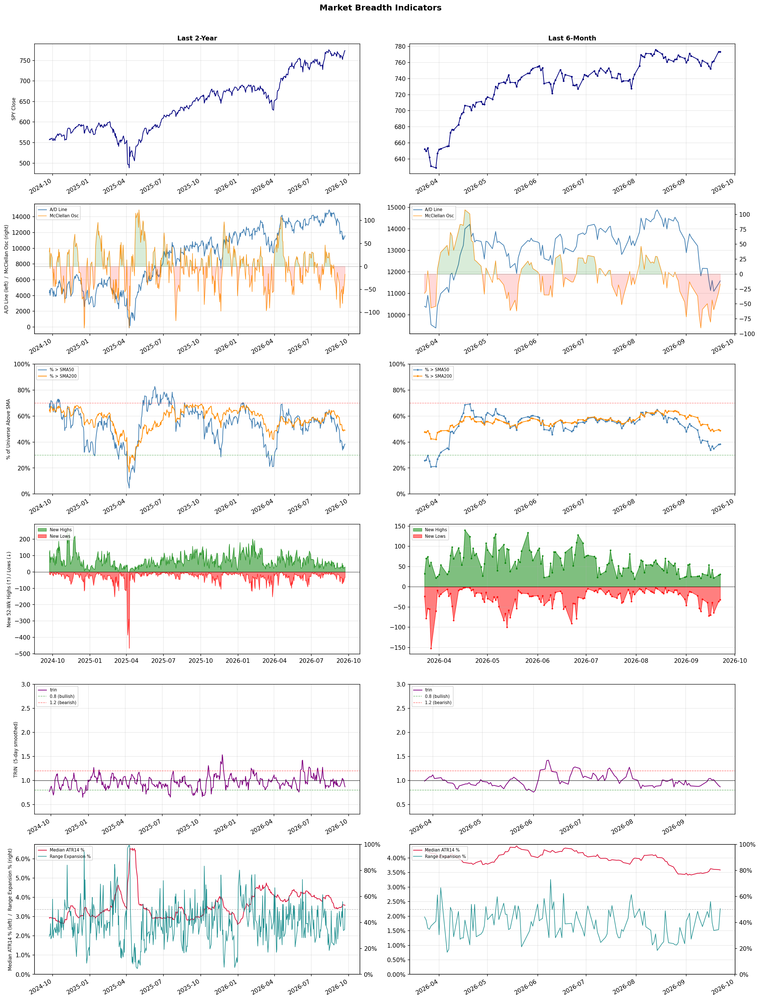

A daily market breadth and sector rotation report for active investors
| Item | Read |
|---|---|
| Regime | Defensive |
| Risk posture | Defensive |
| Universe | 1,322 stocks tracked · 31 new 52-week highs · 30 active swing setups |
| Breadth | only 38.4% of tracked stocks are above SMA50, new lows exceed new highs (32 vs 31), McClellan oscillator (breadth momentum) is negative at -17.1 |
| Leadership | Oil & Gas Refining & Marketing, Diagnostics & Research, and Health Information Services |
| Weakest groups | Gambling, Resorts & Casinos, and Leisure |
Use this report to prioritize research and chart review; validate entries, stops, liquidity, earnings, and risk before acting.
| Item | Read |
|---|---|
| Primary read | Defensive regime with Defensive risk posture. |
| Research queue | UGP, DINO, MPC, VLO, CSAN |
| Leadership focus | Oil & Gas Refining & Marketing, Diagnostics & Research, and Health Information Services |
| Caution list | Gambling, Resorts & Casinos, and Leisure |
| Review prompt | Check extension risk, chart location, fundamentals, valuation, and earnings before using any research row. |
| Item | Read |
|---|---|
| Primary read | 4 active risk warnings; use screen output as watchlist input only. |
| Bullish screens | NTRA, OPK, SDGR, TXG, SMCI |
| Bearish screens | FIS, YELP, CHTR, TMUS, TXT |
| Alerts / levels | Automated trigger, stop, ATR, liquidity, reward/risk, and event-risk levels are pending future enrichment. |
| Review prompt | Open the linked chart, define trigger and invalidation, then check liquidity and event risk independently. |
Risk Posture: Defensive — screen backdrop favors caution; require independent risk review before new exposure
Metric context: McClellan below -50 = elevated selling pressure; below -100 = washout territory. Range Expansion = share of stocks with daily range above their 20-day average. Signal Density = share of tracked names appearing in signal screens.
| Breadth Date | % > SMA50 | % > SMA200 | New Highs | New Lows | McClellan | Median Range | Avg Range | Median ATR14 | Range Expansion | Signal Density |
|---|---|---|---|---|---|---|---|---|---|---|
| 2026-09-22 | 38.4% | 49.0% | 31 | 32 | -17.1 | 3.2% | 3.7% | 3.6% | 50.6% | 7.8% |

Prior comparison date: September 21, 2026
| Metric | Prior | Current | Change |
|---|---|---|---|
| Regime | Defensive | Defensive | unchanged |
| Risk Posture | Defensive | Defensive | unchanged |
| % > SMA50 | 38.1% | 38.4% | +0.3 pts |
| % > SMA200 | 49.4% | 49.0% | -0.5 pts |
| New Highs | 28 | 31 | +3 |
| New Lows | 36 | 32 | +4 |
Top-10 industries entering: Electronic Components and Semiconductors. Top-10 industries leaving: Banks - Diversified and Oil & Gas Midstream. New multi-signal long setups: AKAM, ALAB, APPS, HYLN, MRNA, NET, OPK, PENG, RNG. New multi-signal short setups: CHTR.
| Status | Tickers | Read |
|---|---|---|
| Added | AEHR, ALAB, APPS, BHVN, CHTR, CLSK, HYLN, IQV | New technical screen matches vs prior report. |
| Removed | BB, BROS, CMS, COHU, CWH, DOCN, FLUT, HE | No longer present in today's technical screen matches. |
| Still Active | AKAM, AMD, ARM, FIS, NEOG, NTRA, SMCI, YELP | Appeared in both current and prior reports. |
| Promoted | AKAM, SMCI | Model Screen Score improved by at least 15 points. |
| Downgraded | none | Model Screen Score declined by at least 15 points. |
| Direction | Industry | ETF | Prior Rank | Current Rank | Days | Rank Change |
|---|---|---|---|---|---|---|
| Rose | Semiconductors | SOXX | 78 | 8 | 42 | +70 |
| Rose | Capital Markets | KCE | 77 | 9 | 35 | +68 |
| Rose | Semiconductor Equipment & Materials | SOXX | 81 | 13 | 7 | +68 |
| Rose | Steel | SLX | 63 | 4 | 28 | +59 |
| Rose | Electronic Components | XLK | 69 | 10 | 7 | +59 |
Bull: The semiconductor sector is experiencing a rise in relative strength primarily due to increasing demand driven by advancements in artificial intelligence and connectivity, as highlighted by Qualcomm's recent 7% jump following an AI interconnect demonstration. Additionally, the overall sector is rebounding as evidenced by notable performances from companies like Lattice Semiconductor and Macom, indicating strong investor confidence and a recovery from previous selloffs. This positive momentum is further supported by the broader market's mixed performance, with equity futures rising as oil prices decline, suggesting a favorable macroeconomic environment for tech investments.
Bear: While the semiconductor sector may currently show rising relative strength, the underlying fundamentals present significant headwinds that could undermine this momentum. The recent surge in stocks like Skyworks and Qualcomm may be more reflective of short-term trading sentiment rather than sustainable demand, particularly as Michael Burry's increased short positions on companies like Micron signal concerns over rising memory supply and potential oversaturation in the market. Furthermore, the mixed performance of exchange-traded funds and the sharp selloff in the Direxion Semiconductor Bull ETF indicate that investor confidence may be fragile and susceptible to broader economic uncertainties, particularly in light of geopolitical tensions and fluctuating oil prices.
Verdict: The semiconductor industry's current rise is fundamentally driven by surging demand for AI and connectivity technologies, bolstered by strong performances from key players like Qualcomm and Lattice Semiconductor. However, a critical risk lies in the potential oversupply in the memory market, as indicated by Michael Burry's short positions, which could undermine this momentum if investor sentiment shifts due to broader economic uncertainties or geopolitical tensions. Investors should closely monitor supply dynamics and market sentiment to navigate potential volatility in the sector.
Sources: Yahoo Finance, Google News
Bull: The Capital Markets sector, represented by the SPDR S&P Capital Markets ETF (KCE), is experiencing rising relative strength likely due to a favorable macroeconomic environment and investor sentiment, as indicated by headlines discussing bullish outlooks on stock performance and the midterm mindset influencing market dynamics. Additionally, the emphasis on profit potential in sectors primed for growth, as noted by J.P. Morgan Private Bank, suggests that capital markets firms are well-positioned to capitalize on increased trading volumes and market activity, further bolstering investor confidence in the sector's resilience and growth prospects.
Bear: While the relative strength trend for the SPDR S&P Capital Markets ETF (KCE) may appear positive, it is crucial to consider the underlying economic uncertainties and potential headwinds that could undermine this bullish sentiment. Rising interest rates, inflationary pressures, and geopolitical tensions could dampen trading volumes and investor confidence, leading to a slowdown in capital markets activity. Furthermore, the optimistic narratives from analysts may overlook the inherent volatility and cyclical nature of the sector, which could expose investors to significant risks if market conditions shift unexpectedly.
Verdict: The Capital Markets sector is likely experiencing rising relative strength due to a favorable macroeconomic environment, characterized by increased trading volumes and positive investor sentiment, as firms are positioned to capitalize on growth opportunities. However, investors should remain cautious of potential risks, such as rising interest rates and inflation, which could dampen market activity and lead to increased volatility in the sector. It is advisable to monitor macroeconomic indicators closely and consider hedging strategies to mitigate exposure to these risks.
Sources: Yahoo Finance, Google News
Bull: The Semiconductor Equipment & Materials sector is experiencing rising relative strength primarily due to increasing demand for advanced semiconductor technologies driven by the AI boom, as evidenced by Qualcomm's recent 7% jump following a successful AI interconnect demo. Additionally, the positive momentum in chip equipment stocks like Lam Research and Applied Materials, which have outperformed the broader sector, indicates strong investment activity and optimism in semiconductor manufacturing capabilities, further bolstered by declining oil prices that may enhance profit margins across the industry.
Bear: While the semiconductor sector may currently exhibit rising relative strength, this momentum could be misleading given the broader economic uncertainties and potential oversupply issues. Michael Burry's increased shorts on companies like Micron signal a growing concern about rising memory supply, which could lead to price declines and margin pressure. Furthermore, the recent surge in stocks like Skyworks may be a short-term reaction rather than a sustainable trend, especially as key players like Qorvo sit out the rally, indicating a lack of broad-based confidence in the sector's long-term growth potential.
Verdict: The semiconductor equipment and materials sector is likely experiencing a surge in demand driven by advancements in AI technologies, as evidenced by strong performances from key players like Qualcomm and Lam Research. However, investors should remain cautious of potential oversupply issues and margin pressures, particularly in the memory segment, as indicated by increased short positions from notable investors like Michael Burry. It's crucial to monitor market dynamics and adjust positions accordingly, as short-term gains may not reflect sustainable growth amidst broader economic uncertainties.
Sources: Yahoo Finance, Google News
Bull: The steel industry, as represented by the VanEck Steel ETF (SLX), is experiencing rising relative strength primarily due to increased demand driven by the AI sector, as highlighted in the headline "AI Hunger Fuels VanEck Steel ETF (SLX): Is There More Room to Grow?" Additionally, the recent performance of steel stocks like Nucor and Steel Dynamics indicates a competitive landscape that is benefiting from robust pricing power and operational efficiencies, as seen in the "Steel ETF (SLX) Touches a New 52-Week High" headline. This combination of strong demand from emerging technologies and solid stock performance suggests a bullish outlook for the steel sector.
Bear: While the rising relative strength of the VanEck Steel ETF (SLX) and increased demand from the AI sector may appear promising, several headwinds could undermine this bullish outlook. Firstly, the steel industry is highly cyclical and sensitive to economic fluctuations; any downturn in global economic growth could lead to reduced demand, particularly if AI investments do not translate into sustained infrastructure spending. Additionally, the recent performance of individual steel stocks like Nucor, despite their operational efficiencies, may be overshadowed by rising input costs and potential regulatory challenges, which could erode profit margins and limit future growth.
Verdict: The steel industry's rising relative strength, particularly through the VanEck Steel ETF (SLX), is fundamentally driven by increased demand from the AI sector, which is boosting infrastructure spending and enhancing pricing power among leading steel producers like Nucor and Steel Dynamics. However, investors should remain cautious of potential economic downturns that could dampen demand, as well as rising input costs and regulatory challenges that may pressure profit margins and hinder growth.
Sources: Yahoo Finance, Google News
Bull: The Electronic Components sector is experiencing a rise in relative strength primarily due to the overall positive sentiment in the tech industry, as indicated by headlines like "Tech Stocks Higher in Afternoon Trading" and "Exchange-Traded Funds Rise." This bullish momentum is further supported by the recent Q2 earnings reports, which highlight strong performance among key players like Benchmark (NYSE:BHE) and Plexus (NASDAQ:PLXS), suggesting robust demand and operational efficiency within the sector. Additionally, the drop in oil prices due to potential diplomatic resolutions in the US-Iran conflict may alleviate inflationary pressures, benefiting tech companies reliant on stable supply chains and lower production costs.
Bear: While the overall tech sector may be experiencing a rise in sentiment, the performance of individual stocks like Cisco, which recently sank 6%, highlights underlying vulnerabilities within the electronic components sector. Furthermore, despite positive earnings reports from companies like Benchmark and Plexus, these results may not be indicative of sustainable growth, as they could be driven by short-term factors rather than long-term demand. Additionally, the potential easing of oil prices does not address the ongoing supply chain disruptions and geopolitical tensions that could continue to impact production costs and operational efficiency in the sector.
Verdict: The electronic components sector is likely experiencing a rise due to strong earnings reports from key players and positive sentiment in the broader tech industry, bolstered by easing inflationary pressures from falling oil prices. However, investors should remain cautious of the underlying vulnerabilities highlighted by individual stock performances, such as Cisco's recent decline, and the potential for ongoing supply chain disruptions that could undermine long-term growth prospects. It is advisable to monitor individual stock performance and geopolitical developments closely before making investment decisions.
Sources: Yahoo Finance, Google News
| Direction | Industry | ETF | Prior Rank | Current Rank | Days | Rank Change |
|---|---|---|---|---|---|---|
| Fell | Travel Services | N/A | 8 | 80 | 42 | -72 |
| Fell | Packaging & Containers | N/A | 14 | 77 | 42 | -63 |
| Fell | Uranium | URA | 20 | 72 | 14 | -52 |
| Fell | Restaurants | N/A | 30 | 81 | 28 | -51 |
| Fell | Gambling | N/A | 40 | 87 | 14 | -47 |
Bear: While the bull analyst highlights macroeconomic pressures and competitive dynamics, the underlying issues in the Travel Services sector are more profound. The persistent decline in relative strength suggests that consumer sentiment may be shifting away from travel, driven by factors such as ongoing geopolitical tensions, environmental concerns, and the potential for a recession, which could lead to sustained reductions in discretionary spending. Furthermore, the focus on earnings performance by key players like Expedia and Choice Hotels may indicate a struggle to maintain profitability in an increasingly cost-sensitive market, raising doubts about the sector's ability to rebound by 2026.
Bull: The Travel Services sector is experiencing a decline in relative strength primarily due to macroeconomic pressures, such as rising inflation and interest rates, which can dampen consumer discretionary spending on travel. Additionally, the headlines indicate a competitive landscape, with companies like Expedia and Choice Hotels focusing on earnings performance and investment opportunities, suggesting that while some firms may be performing well, the overall sector sentiment remains cautious as investors weigh the potential for economic headwinds against growth prospects for 2026.
Verdict: The Travel Services sector's decline is fundamentally driven by macroeconomic pressures, including rising inflation and interest rates, which are dampening consumer discretionary spending. The bear case highlights a key risk: if geopolitical tensions and environmental concerns continue to shift consumer sentiment away from travel, the sector may face prolonged challenges in profitability and growth, making it crucial for investors to closely monitor these trends and adjust their strategies accordingly.
Sources: Google News
Bear: While the bull analyst points to resilience in certain stocks, the overarching trend in the Packaging & Containers industry remains bearish, with a notable decline in relative strength. The rising energy costs driven by the Iran war are not just temporary challenges; they threaten to erode profit margins across the board, and any potential recovery may be undermined by persistent geopolitical instability and inflationary pressures that could stifle consumer demand. Furthermore, the industry's vulnerability to external shocks highlights a fundamental weakness that could deter long-term investment, making it a risky sector to navigate.
Bull: The Packaging & Containers industry is experiencing a decline in relative strength primarily due to rising energy costs driven by geopolitical tensions, particularly the Iran war, as highlighted in the headlines. This situation has created significant challenges for packaging companies, with Morningstar noting that these stocks are among the hardest hit by the conflict, leading to increased operational costs and reduced margins. Despite these headwinds, there are signs of resilience, as indicated by reports of specific stocks poised to weather these challenges, suggesting potential opportunities for recovery in the sector.
Verdict: The Packaging & Containers industry is experiencing a decline primarily due to rising energy costs linked to geopolitical tensions, particularly the Iran war, which are squeezing profit margins and increasing operational costs. While some stocks may show resilience, the overarching risk remains that persistent geopolitical instability and inflation could further depress consumer demand, making this sector a high-risk investment. Investors should approach with caution, focusing on companies with strong fundamentals that can adapt to these challenges.
Sources: Google News
Bear: While the bull analyst attributes the recent decline in the uranium sector to profit-taking and financial concerns, a deeper issue looms: the long-term viability and competitiveness of nuclear energy in the face of rapidly advancing renewable technologies and changing energy policies. The volatility highlighted in the headlines suggests that investor confidence is not merely a temporary reaction but rather a reflection of fundamental uncertainties surrounding the industry's growth prospects, especially as loss-making developers struggle to gain traction amid a market that increasingly favors established, profitable producers. This divergence could indicate a broader systemic risk in the sector, making it difficult for the uranium ETF (URA) to regain its upward momentum.
Bull: The recent decline in the relative strength of the uranium sector can be attributed to a combination of profit-taking after a rally and concerns over the financial stability of key players in the industry, as highlighted by UBS's downgrade of NuScale Power due to cash burn and timeline issues. Additionally, the split in performance between profitable uranium producers and loss-making developers, as noted in the headlines, reflects investor caution amid sector volatility, leading to a more cautious sentiment overall.
Verdict: The recent decline in the uranium sector is primarily driven by profit-taking after a strong rally and heightened concerns about the financial stability of key players, particularly loss-making developers. However, the bear case highlights a critical risk: the long-term viability of nuclear energy is increasingly challenged by the rapid advancement of renewable technologies and shifting energy policies, which could undermine investor confidence and hinder the sector's recovery. Investors should closely monitor these developments and consider a cautious approach, focusing on established, profitable producers to mitigate exposure to systemic risks.
Sources: Yahoo Finance, Google News
Bear: While the bull analyst attributes the decline in the restaurant industry's relative strength to broader economic pressures, it is crucial to recognize that the sector is facing significant headwinds beyond just consumer discretionary spending. Rising labor costs, supply chain disruptions, and inflationary pressures are squeezing margins, leading to a potential decline in profitability for restaurants like Darden (DRI). Furthermore, as consumers become more cautious with their discretionary spending, many may prioritize value-oriented dining options or shift to home cooking, further eroding the customer base for higher-end establishments, thereby amplifying the bearish outlook for the sector.
Bull: The recent decline in the relative strength of the restaurant industry can largely be attributed to broader economic pressures affecting consumer discretionary spending, as highlighted by the ongoing selloff in restaurant stocks and concerns over valuation traps (as noted in the Seeking Alpha article). Additionally, the focus on outperforming sectors, such as consumer discretionary, suggests that investors may be reallocating capital to more resilient industries amidst economic uncertainty, impacting the overall sentiment towards restaurant stocks like Darden Restaurants (DRI) as indicated in the Yahoo Finance and inkl articles.
Verdict: The recent decline in the restaurant industry is primarily driven by broader economic pressures, including rising labor costs and inflation, which are squeezing profit margins and impacting consumer discretionary spending. Key risks from the bear case include the potential for consumers to increasingly favor value-oriented dining or home cooking, further eroding demand for higher-end establishments like Darden Restaurants (DRI). Investors should closely monitor economic indicators and consumer behavior trends to assess the sustainability of restaurant profitability in this challenging environment.
Sources: Google News
Bear: While the bull analyst points to a recalibration as a positive sign of operational efficiency, the layoffs in the sports betting industry signal deeper issues, such as oversaturation and unsustainable growth projections that could hinder long-term profitability. Additionally, the recent relative weakness in the gambling sector, despite isolated stock surges, suggests a broader trend of declining consumer spending and regulatory challenges that may overshadow any temporary optimism from Goldman Sachs or The Motley Fool. This environment raises concerns about the sustainability of growth in the gambling sector, making it a risky investment.
Bull: The recent relative weakness in the gambling industry can be attributed to a recalibration in the sports betting sector, as highlighted by the layoffs reported by Front Office Sports. This adjustment suggests that companies are streamlining operations in response to changing market dynamics, which may have temporarily impacted investor sentiment. However, the positive outlook from Goldman Sachs regarding a resurgence in the regional gaming sector, along with the bullish sentiment from The Motley Fool and significant stock surges like Playtech's 22% increase, indicate that the underlying fundamentals remain strong and present a compelling investment opportunity moving forward.
Verdict: The gambling industry's recent decline can be fundamentally attributed to a recalibration in the sports betting sector, where layoffs indicate a response to oversaturation and unsustainable growth expectations. While there are signs of potential recovery, such as Goldman Sachs' positive outlook and isolated stock surges, the key risk remains a broader trend of declining consumer spending and regulatory challenges that could hinder long-term profitability, making it essential for investors to approach with caution.
Sources: Google News
| Industry | Rank | ETF | 7d | 14d | 28d | 42d | Chg 42d | Size | 20D | 60D | Composite | Active Setups |
|---|---|---|---|---|---|---|---|---|---|---|---|---|
| Oil & Gas Refining & Marketing | 1 | CRAK | 2 | 1 | 4 | 6 | +5 | 7 | 9.0% | 48.1% | 0.967 | 0 |
| Diagnostics & Research | 2 | N/A | 1 | 8 | 1 | 1 | -1 | 16 | 8.7% | 28.8% | 0.953 | 0 |
| Health Information Services | 3 | N/A | 4 | 6 | 3 | 4 | +1 | 12 | 10.9% | 36.6% | 0.925 | 0 |
| Steel | 4 | SLX | 9 | 13 | 63 | 34 | +30 | 5 | 8.7% | 20.0% | 0.909 | 0 |
| Computer Hardware | 5 | XLK | 44 | 16 | 24 | 18 | +13 | 15 | 9.7% | 11.9% | 0.863 | 1 |
| Software - Infrastructure | 6 | IGV | 11 | 23 | 16 | 12 | +6 | 62 | 5.3% | 17.6% | 0.825 | 1 |
| Medical Care Facilities | 7 | IHF | 8 | 18 | 10 | 15 | +8 | 9 | 1.2% | 12.7% | 0.806 | 0 |
| Semiconductors | 8 | SOXX | 63 | 65 | 57 | 78 | +70 | 38 | 14.0% | -7.3% | 0.784 | 1 |
| Capital Markets | 9 | KCE | 26 | 10 | 20 | 76 | +67 | 31 | 6.6% | 10.6% | 0.772 | 1 |
| Electronic Components | 10 | XLK | 69 | 54 | 54 | 44 | +34 | 10 | 7.2% | -7.0% | 0.770 | 0 |
Rank columns (7d–42d) show the industry's rank that many trading days ago — lower is stronger. Chg 42d = rank change vs 42 trading days ago — positive means the industry moved up. 20D and 60D are the mean stock return within the industry over that period. Active Setups: count of today's swing-trade candidates from this industry appearing across all signal screens.
| Industry | Rank | ETF | 7d | 14d | 28d | 42d | Chg 42d | Size | 20D | 60D | Composite | Active Setups |
|---|---|---|---|---|---|---|---|---|---|---|---|---|
| Gambling | 87 | N/A | 40 | 40 | 52 | 75 | -12 | 5 | -14.6% | -15.7% | 0.057 | 0 |
| Resorts & Casinos | 86 | N/A | 77 | 83 | 83 | 48 | -38 | 6 | -11.5% | -15.6% | 0.062 | 0 |
| Leisure | 85 | N/A | 74 | 79 | 78 | 55 | -30 | 9 | -11.9% | -15.8% | 0.103 | 0 |
| Footwear & Accessories | 84 | N/A | 87 | 87 | 88 | 84 | 0 | 5 | -7.1% | -17.2% | 0.103 | 0 |
| Chemicals | 83 | N/A | 76 | 84 | 86 | 88 | +5 | 8 | -7.2% | -20.3% | 0.125 | 0 |
| REIT - Diversified | 82 | N/A | 58 | 72 | 75 | 80 | -2 | 5 | -8.6% | -10.2% | 0.129 | 0 |
| Restaurants | 81 | N/A | 73 | 44 | 30 | 67 | -14 | 16 | -15.2% | -13.7% | 0.132 | 1 |
| Travel Services | 80 | N/A | 71 | 76 | 44 | 8 | -72 | 10 | -14.4% | -13.2% | 0.132 | 0 |
| REIT - Retail | 79 | N/A | 62 | 63 | 72 | 72 | -7 | 11 | -7.6% | -11.0% | 0.161 | 0 |
| Credit Services | 78 | N/A | 56 | 69 | 43 | 39 | -39 | 15 | -9.9% | -9.4% | 0.175 | 0 |
Rank columns (7d–42d) show the industry's rank that many trading days ago — lower is stronger. Chg 42d = rank change vs 42 trading days ago — positive means the industry moved up. 20D and 60D are the mean stock return within the industry over that period. Active Setups: count of today's swing-trade candidates from this industry appearing across all signal screens.
These are research candidates from top-ranked stocks, capped at five names per industry to avoid over-concentration. Returns shown (60D, 120D, 250D) are historical — they reflect where prices have already moved, not forward expectations. Extension Risk flags names that may require extra patience or a better entry point. They are not buy signals.
Chart: TV = TradingView chart (opens in browser); PDF = local chart file (if downloaded).
| Ticker | Name | Industry | Industry Rank | Market Cap | 60D Hist | 120D Hist | 250D Hist | Extension Risk | Research Reason | Chart |
|---|---|---|---|---|---|---|---|---|---|---|
| UGP | Ultrapar Participacoes | Oil & Gas Refining & Marketing | 1 | N/A | 59.6% | 43.7% | 97.0% | Extended | Top-ranked in industry; extended | TV |
| DINO | HF Sinclair | Oil & Gas Refining & Marketing | 1 | N/A | 57.2% | 73.3% | 108.6% | Extended | Top-ranked in industry; extended | TV |
| MPC | Marathon Petroleum | Oil & Gas Refining & Marketing | 1 | N/A | 53.8% | 60.6% | 107.6% | Extended | Top-ranked in industry; extended | TV |
| VLO | Valero Energy | Oil & Gas Refining & Marketing | 1 | N/A | 46.0% | 54.0% | 126.0% | Constructive | Top-ranked in industry | TV |
| CSAN | Cosan | Oil & Gas Refining & Marketing | 1 | N/A | 3.1% | -22.7% | -36.1% | Constructive | Top-ranked in industry | TV |
| TWST | Twist Bioscience | Diagnostics & Research | 2 | N/A | 64.9% | 246.4% | 495.5% | Extended | Top-ranked in industry; extended | TV |
| NTRA | Natera | Diagnostics & Research | 2 | N/A | 49.2% | 95.5% | 126.2% | Constructive | Top-ranked in industry | TV |
| NEO | NeoGenomics | Diagnostics & Research | 2 | N/A | 33.3% | 154.6% | 132.3% | Extended | Top-ranked in industry; extended | TV |
| RVTY | Revvity | Diagnostics & Research | 2 | N/A | 26.9% | 63.8% | 67.7% | Constructive | Top-ranked in industry | TV |
| OPK | Opko Health | Diagnostics & Research | 2 | N/A | 13.1% | 51.8% | 20.1% | Constructive | Top-ranked in industry | TV |
| TXG | 10x Genomics | Health Information Services | 3 | N/A | 119.6% | 280.1% | 546.1% | Very extended | Top-ranked in industry; very extended | TV |
| SDGR | Schrodinger | Health Information Services | 3 | N/A | 82.1% | 170.2% | 61.1% | Extended | Top-ranked in industry; extended | TV |
| VEEV | Veeva Systems | Health Information Services | 3 | N/A | 52.3% | 48.5% | -6.4% | Extended | Top-ranked in industry; extended | TV |
| CERT | Certara | Health Information Services | 3 | N/A | 51.2% | 54.9% | -23.9% | Extended | Top-ranked in industry; extended | TV |
| TEM | Tempus AI | Health Information Services | 3 | N/A | 37.5% | 70.7% | -8.2% | Constructive | Top-ranked in industry | TV |
| CLF | Cleveland-Cliffs | Steel | 4 | N/A | 25.9% | 48.3% | 9.0% | Constructive | Top-ranked in industry | TV |
| SID | National Steel | Steel | 4 | N/A | 25.5% | -4.8% | -21.9% | Constructive | Top-ranked in industry | TV |
| MT | ArcelorMittal SA | Steel | 4 | N/A | 23.5% | 42.6% | 108.1% | Constructive | Top-ranked in industry | TV |
| GGB | Gerdau | Steel | 4 | N/A | 22.2% | 41.6% | 62.6% | Constructive | Top-ranked in industry | TV |
| NUE | Nucor | Steel | 4 | N/A | 2.7% | 45.6% | 84.1% | Constructive | Top-ranked in industry | TV |
These are technical screen matches from existing signal files. They are not trade recommendations. Trigger, stop, ATR, liquidity, reward/risk, and event risk still require separate validation until those inputs are available.
Model Screen Score is weighted by signal count, industry rank, freshness, and setup type. It is not a probability of profit, expected return, or suitability rating. Industry cap: max 3 candidates per industry.
Signal glossary: Momentum Pullback = stock in an uptrend that has pulled back 10–30% and shows re-entry conditions. MA Compression = short- and long-term moving averages converging, often preceding a directional move. Three-Day Up/Down = three consecutive closes in the same direction. New 52Wk High/Low = price reached a new annual extreme.
Chart: TV = TradingView chart (opens in browser); PDF = local chart file (if downloaded).
| Ticker | Industry | Setups | Close | Industry Rank | Signal Count | Model Screen Score | Reason | Chart |
|---|---|---|---|---|---|---|---|---|
| NTRA | Diagnostics & Research | New 52Wk High; Three-Day Up | 390.90 | 2 | 2 | 100 | Multi-signal; top industry breakout | TV |
| OPK | Diagnostics & Research | New 52Wk High; Three-Day Up | 1.73 | 2 | 2 | 100 | Multi-signal; top industry breakout | TV |
| SDGR | Health Information Services | New 52Wk High; Three-Day Up | 30.70 | 3 | 2 | 100 | Multi-signal; top industry breakout | TV |
| TXG | Health Information Services | New 52Wk High; Three-Day Up | 80.70 | 3 | 2 | 100 | Multi-signal; top industry breakout | TV |
| SMCI | Computer Hardware | Momentum Pullback; Three-Day Up | 41.54 | 5 | 2 | 93 | Multi-signal; top industry pullback | TV |
| AKAM | Software - Infrastructure | Momentum Pullback; Three-Day Up | 118.34 | 6 | 2 | 93 | Multi-signal; top industry pullback | TV |
| NET | Software - Infrastructure | New 52Wk High; Three-Day Up | 353.00 | 6 | 2 | 93 | Multi-signal; top industry breakout | TV |
| RXT | Software - Infrastructure | Momentum Pullback; Three-Day Up | 4.13 | 6 | 2 | 93 | Multi-signal; top industry pullback | TV |
| ALAB | Semiconductors | Momentum Pullback; Three-Day Up | 363.46 | 8 | 2 | 85 | Multi-signal; top industry pullback | TV |
| AMD | Semiconductors | New 52Wk High; Three-Day Up | 623.77 | 8 | 2 | 85 | Multi-signal; top industry breakout | TV |
| ARM | Semiconductors | Momentum Pullback; Three-Day Up | 333.20 | 8 | 2 | 85 | Multi-signal; top industry pullback | TV |
| MRNA | Biotechnology | New 52Wk High; Three-Day Up | 182.56 | 15 | 2 | 85 | Multi-signal; new-high strength | TV |
| TECH | Biotechnology | New 52Wk High; Three-Day Up | 72.55 | 15 | 2 | 85 | Multi-signal; new-high strength | TV |
| APPS | Software - Application | Momentum Pullback; Three-Day Up | 12.19 | 20 | 2 | 77 | Multi-signal; pullback setup | TV |
| RNG | Software - Application | New 52Wk High; Three-Day Up | 79.73 | 20 | 2 | 77 | Multi-signal; new-high strength | TV |
| PENG | Information Technology Services | Momentum Pullback; Three-Day Up | 56.58 | 29 | 2 | 70 | Multi-signal; pullback setup | TV |
| NEOG | Medical Devices | New 52Wk High; Three-Day Up | 13.98 | 33 | 2 | 70 | Multi-signal; new-high strength | TV |
| HYLN | Auto Parts | Momentum Pullback; Three-Day Up | 4.47 | 35 | 2 | 70 | Multi-signal; pullback setup | TV |
| VSTS | Rental & Leasing Services | Momentum Pullback; Three-Day Up | 14.43 | 59 | 2 | 65 | Multi-signal; pullback setup | TV |
| UMAC | Computer Hardware | Momentum Pullback | 24.03 | 5 | 1 | 58 | Single-signal; top industry pullback | TV |
| IQV | Diagnostics & Research | Three-Day Up | 270.09 | 2 | 1 | 55 | Single-signal; top industry setup | TV |
| CLSK | Capital Markets | Momentum Pullback | 15.14 | 9 | 1 | 50 | Single-signal; top industry pullback | TV |
| AEHR | Semiconductor Equipment & Materials | Momentum Pullback | 100.60 | 13 | 1 | 50 | Single-signal; pullback setup | TV |
| LRCX | Semiconductor Equipment & Materials | Momentum Pullback | 310.96 | 13 | 1 | 50 | Single-signal; pullback setup | TV |
| BHVN | Biotechnology | Momentum Pullback | 14.85 | 15 | 1 | 50 | Single-signal; pullback setup | TV |
Bearish setups — stocks making new lows or showing persistent downside patterns. Validate carefully before acting.
| Ticker | Industry | Setups | Close | Industry Rank | Signal Count | Model Screen Score | Reason | Chart |
|---|---|---|---|---|---|---|---|---|
| FIS | Information Technology Services | New 52Wk Low; Three-Day Down | 34.96 | 29 | 2 | 40 | Multi-signal; new-low weakness | TV |
| YELP | Internet Content & Information | New 52Wk Low; Three-Day Down | 18.96 | 32 | 2 | 40 | Multi-signal; new-low weakness | TV |
| CHTR | Telecom Services | New 52Wk Low; Three-Day Down | 117.26 | 46 | 2 | 35 | Multi-signal; new-low weakness | TV |
| TMUS | Telecom Services | New 52Wk Low; Three-Day Down | 162.41 | 46 | 2 | 35 | Multi-signal; new-low weakness | TV |
| TXT | Aerospace & Defense | New 52Wk Low; Three-Day Down | 77.88 | 57 | 2 | 35 | Multi-signal; new-low weakness | TV |
How To Use This Report
| Use | Purpose |
|---|---|
| Market map | Start with breadth, regime, risk warnings, and what changed since the prior report. |
| Industry scan | Use leading, deteriorating, rising, and declining industries to focus research. |
| Research queue | Treat long-term candidates as names for deeper fundamental, valuation, and chart review. |
| Technical review | Treat bullish and bearish screen matches as watchlist inputs that require independent trigger, stop, liquidity, and event-risk checks. |
| Source follow-up | Use chart links and source files to verify raw inputs before relying on any row. |
What This Report Is Not
| Not | Meaning |
|---|---|
| Investment advice | The report does not evaluate personal objectives, risk tolerance, tax situation, account type, or suitability. |
| Buy/sell recommendation | Named tickers are research candidates or screen matches, not recommendations to transact. |
| Price target | The report does not provide fair value estimates, targets, or expected returns. |
| Trade plan | Trigger, stop, sizing, reward/risk, liquidity, and event-risk review remain separate user work. |
| Performance claim | Model Screen Score is not validated historical performance or a forecast of future results. |
| Item | Note |
|---|---|
| Version | Daily Report Methodology v1 |
| Model Screen Score | Screen-fit rank based on signal count, industry rank, freshness, and setup type. |
| Not predictive proof | The score is not expected return, probability of profit, historical validation, or suitability analysis. |
| Industry ranks | Composite industry ranks use existing daily ranking outputs and historical rank columns when available. |
| Research candidates | Long-term rows are research candidates from ranked stocks and leading industries, with historical returns labeled as historical only. |
| Technical matches | Bullish and bearish rows are screen matches requiring independent chart, trigger, stop, liquidity, and event-risk review. |
| Source | Status | Rows | Path |
|---|---|---|---|
| Market breadth | present | 1253 | breadth_20260922.csv |
| Industry composite rankings | present | 87 | all_industry_composite_20260922.csv |
| Top ranked stocks | present | 205 | top_ranked_composite_20260922.csv |
| All ranked stocks | present | 1322 | all_stocks_composite_sorted_20260922.csv |
| Top momentum pullbacks | present | 1474 | top_momentum_pullbacks_20260922.csv |
| MA compression | present | 1474 | ma_compression_stocks_20260922.csv |
| Three-day up/down | present | 174 | three_day_up_down_stocks_20260922.csv |
| New 52-week members | present | 63 | breadth_new_52wk_members_20260922.csv |
This report is generated from automated technical screens and is for informational and research purposes only. It is not investment advice, a solicitation, or a recommendation to buy or sell any security. Past performance is not indicative of future results. You are solely responsible for your own investment decisions. Consult a licensed financial advisor before acting on any information herein.